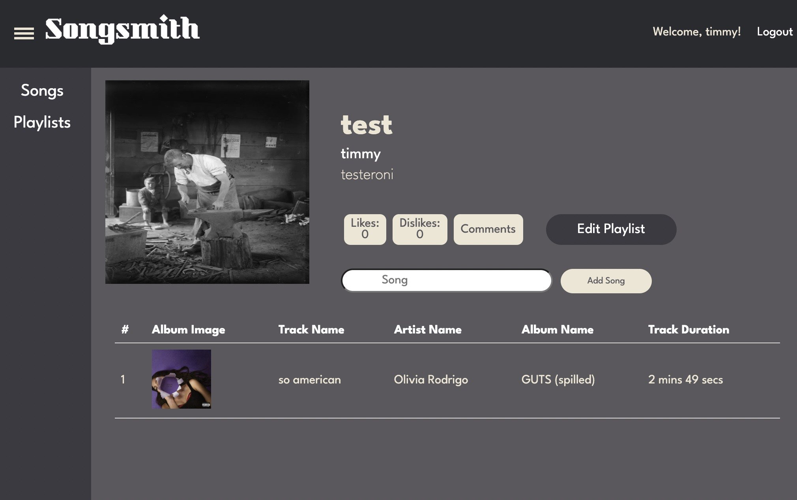

Songsmith is a social media platform for music lovers to create, review, and share playlists.
GitHubUnlike traditional music platforms, Songsmith encourages community interaction through likes, dislikes, and threaded comments on playlists. It's built for music curators who want to express their taste and discover new sounds through shared experiences.
Create and share playlists in interactive threads!
Comment, like, and dislike playlists for collaborative music discovery!
Personalized user feeds driven by social engagement!
Built using the MERN stack (MongoDB, Express, React, Node.js) to deliver a responsive, scalable web application that efficiently handled both frontend and backend logic.
Organized the development process through clear technical documentation, user stories, sprint planning, and quality assurance workflows to maintain focus and clarity throughout the project lifecycle.
Collaborated within a team of four using Agile practices, including pair programming, regular code reviews, and sprint-based task tracking to ensure alignment and accountability.
Oversaw smooth communication between React components and RESTful API endpoints, ensuring data consistency and fast interactions.
Used Git effectively for version tracking, branching, and merging, which enabled smooth collaboration in a team of four. Practiced Agile development methods such as sprint planning, task division, and regular code reviews to maintain team alignment.
Built responsive user interfaces using React, HTML, and CSS, with a strong emphasis on component-based design and effective state management. Integrated frontend components with backend APIs to support real-time updates and dynamic content rendering.
Designed and implemented backend functionality using Node.js and Express. Structured MongoDB schemas efficiently and applied relational data modeling principles within a NoSQL context.
Managed communication between frontend and backend through RESTful APIs, ensuring consistent data flow and logical coherence. Implemented full-stack features including data persistence, user interactions, and playlist review functionality.
Gained hands-on experience with cloud deployment tools and practices to prepare the full stack application for production and testing in hosted environments.
Learned to break down complex features into smaller, manageable tasks and distribute them effectively across the team. Balanced individual contributions with team objectives through clear communication and prioritization during Agile sprints.
MERN Stack (MongoDB, Express, React, Node.js) - allowed for seamless full-stack development and a responsive, scalable web app.
Git & GitHub - version control and collaboration. Enabled smooth team workflow with branch management, pull requests, and issue tracking.
Figma - frontend brainstorming, design, and planning
This project was developed in collaboration with Arjun Ranade, Ishwarya Namburu, and Poornima Godavarthy for CSC307 - Intro to Software Engineering